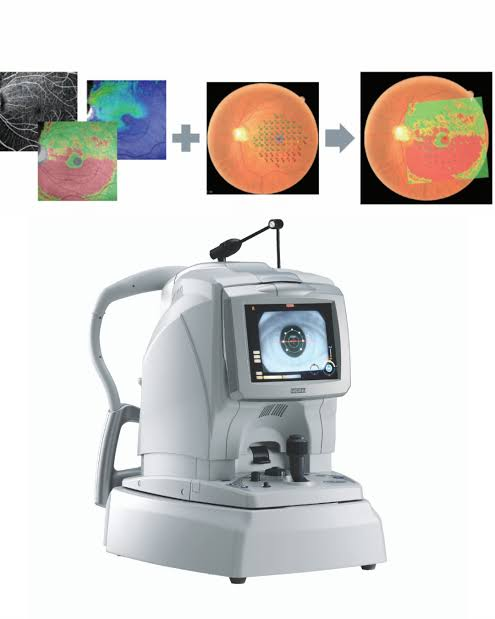
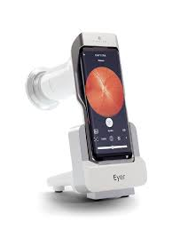
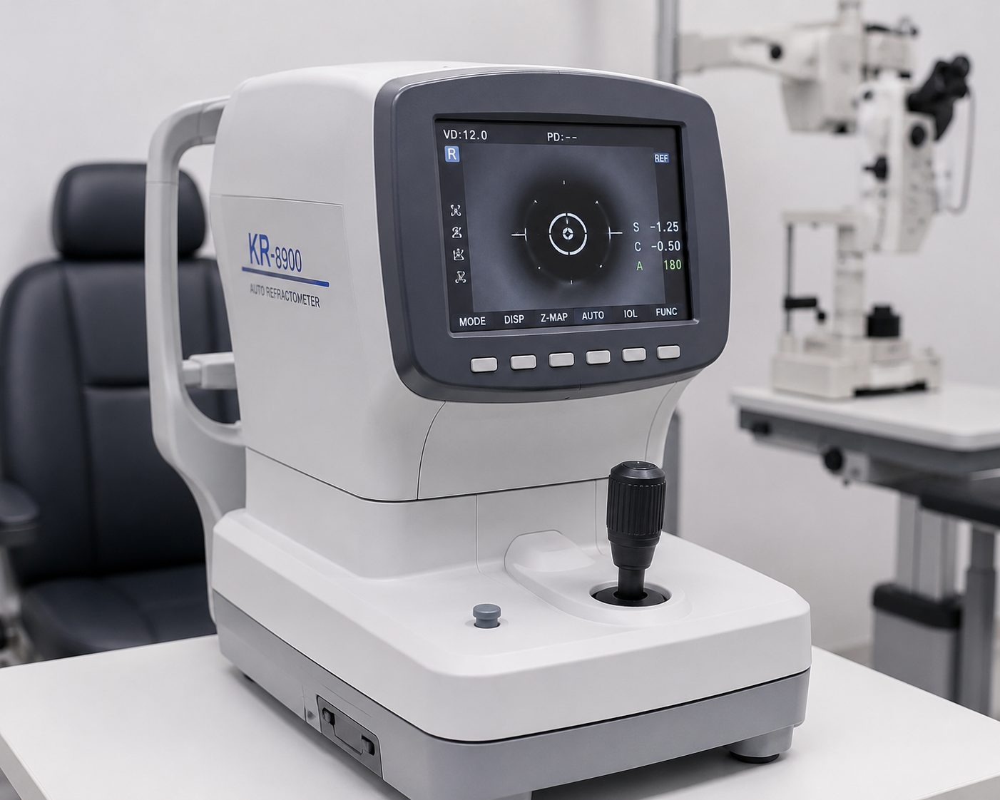

OCULASER
CENTRO OFTALMOLÓGICO
CENTRO OFTALMOLÓGICO

Especialista en diagnóstico y tratamiento de enfermedades oculares con amplia experiencia clínica.
Ver PerfilProfesional especializada en cirugía ocular y tratamientos avanzados para la recuperación visual.
Ver PerfilExperto en enfermedades de retina y procedimientos para preservar la salud visual.
Ver Perfil
Atención especializada en prevención, diagnóstico y seguimiento de enfermedades oculares.
Ver PerfilUtilizamos tecnología avanzada para ofrecer diagnósticos precisos y tratamientos seguros para el cuidado de tu salud visual.

Evaluación detallada de retina y nervio óptico.

Captura imágenes de alta precisión del fondo ocular.

Tratamientos modernos con máxima seguridad.

Medición rápida y precisa de defectos visuales.